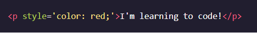
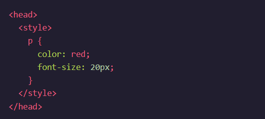
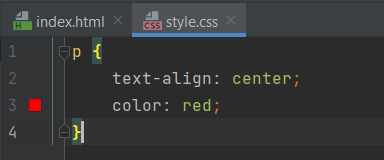
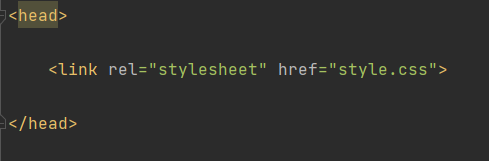

Một số lý thuyết cơ bản về CSS
1. CSS được phân chia thành một số loại thông dụng sau:
- CSS tùy chỉnh hình nền – Background
- CSS tùy chỉnh cách hiển thị đoạn text
- CSS tùy chỉnh kiểu chữ và kích thước
- CSS tùy chỉnh bảng
- CSS tùy chỉnh danh sách
- Mô hình box model có kết hợp với padding, margin, border
2. Ưu điểm của CSS
- Tiết kiệm thời gian
- Khả năng tải trang nhanh chóng
- Dễ dàng khi thực hiện bảo trì
- Sở hữu thuộc tính rộng
- Khả năng tương thích tốt
3. Nhược điểm của CSS
- CSS hoạt động khác biệt cho từng trình duyệt
- Khá khó khăn cho người mới
- Định dạng của web có khả năng gặp rủi ro
4. Cách sử dụng CSS để tạo kiểu cho một website HTML
Ta đã biết rằng CSS là ngôn ngữ tạo kiểu cho website, vậy làm thế nào để sử dụng nó?
Có 3 cách để sử dụng CSS tạo kiểu cho website HTML là: inline,
internal và external. Cụ thể:
Với kiểu inline, ta viết trực tiếp mã code CSS vào thuộc tính style trong phần tử HTML.
Với kiểu internal, ta sẽ viết mã code CSS trong cặp thẻ <style></script> và đặt chúng ở bên trong thẻ <head> của file HTML.
Với kiểu external, ta sẽ tạo một file có đuôi ".css" trong cùng project chứa file HTML.
Sau khi viết code CSS, ta liên kết với file HTML bằng thẻ <link> và đặt nó bên trong thẻ <head> của file HTML.
5. Tổng kết
CSS ngôn ngữ tạo kiểu cho website HTML. CSS được chia thành 6 kiểu thông dụng. Mặc dù có một số khuyết điểm, nhưng với những ưu điểm vượt trội của mình, CSS vẫn là một ngôn ngữ bổ trợ thông dụng trong việc thiết kế website HTML.
Có 3 cách sử dụng CSS là inline, internal và external. Tuỳ từng trường hợp ta có thể sử dụng những cách khác nhau, tuy nhiên khuyến khích các bạn sử dụng kiểu external, khi sử dụng kiểu này thì file CSS sẽ tách riêng với file HTML. Điều này giúp ta đọc code dễ dàng hơn, và thuận tiện hơn trong việc bảo trì cũng như fix lỗi.